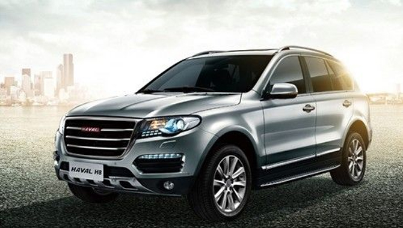

集团资讯
Group Information
据悉，成也H8，败也H8。一年前，怀揣着对中国首款高档SUV自主车型的憧憬，长城汽车(2333.HK)的H股股价由不足30港元直冲51.90港元的上市新高。伴随着管理层先后两次因技术问题推迟H8上市，股价瞬间暴跌至52周新低，最新报28.20港元。
据悉，成也H8，败也H8。一年前，怀揣着对中国首款高档SUV自主车型的憧憬，长城汽车(2333.HK)的H股股价由不足30港元直冲51.90港元的上市新高。伴随着管理层先后两次因技术问题推迟H8上市，股价瞬间暴跌至52周新低，最新报28.20港元。 据悉，成也H8，败也H8。一年前，怀揣着对中国首款高档SUV自主车型的憧憬，长城汽车(2333.HK)的H股股价由不足30港元直冲51.90港元的上市新高。伴随着管理层先后两次因技术问题推迟H8上市，股价瞬间暴跌至52周新低，最新报28.20港元。瑞士银行下调预期哈弗H8今年销售至0，相信最快整车交付时间将拖延至今年底或明年初，但瑞银同时上调H6销售预测，由27.6万辆升至31.2万辆。此消彼长，该行下调今年盈利预测5%至86亿元，相信H6的强劲销售可部分抵消高端型号的空缺。

据悉，成也H8，败也H8。一年前，怀揣着对中国首款高档SUV自主车型的憧憬，长城汽车(2333.HK)的H股股价由不足30港元直冲51.90港元的上市新高。伴随着管理层先后两次因技术问题推迟H8上市，股价瞬间暴跌至52周新低，最新报28.20港元。
据悉，成也H8，败也H8。一年前，怀揣着对中国首款高档SUV自主车型的憧憬，长城汽车(2333.HK)的H股股价由不足30港元直冲51.90港元的上市新高。伴随着管理层先后两次因技术问题推迟H8上市，股价瞬间暴跌至52周新低，最新报28.20港元。